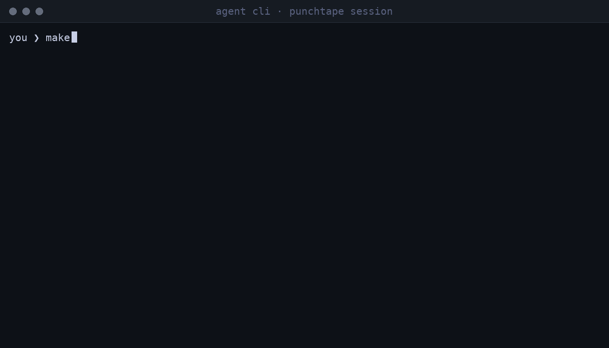

Your AI writes the code. punchtape makes it get the entire job done - with every claim proven.

The numbers, measured
times you had to verify and accept the work
your verifying time (est.)
tasks accepted on first submission
Per 25 tasks, without → with punchtape. Field series 0.4.0. Three rounds of field tests are published as a paper (a preprint, not peer-reviewed): blind judges checked 1720 points across both groups and found nothing missing in either group - SSRN · Preprints.org · Research Square.
The paper covers the 0.1/0.2 era. The registry documents every later series - every number, series by series: METRICS · RESEARCH.
What normally happens
- You give a task to your AI.
- It answers: "Done! All tested!"
- Your own check shows otherwise - bugs, missing pieces, half of the ask quietly dropped.
- You send it back. "Done! All tested!" - still not. And again. And again.
- The loop is yours: check, send back, re-check.
An AI left alone grades its own homework - the claim "done" costs it nothing. punchtape takes that job away. Your words become the law of the task. Each claim is measured by running it. The work cannot end until it is genuinely finished.
Try it
You need two things - your AI assistant and Linux or macOS. Nothing else.
- Open the folder the work will live in - a new empty one, or your existing project.
- Paste this line to your assistant. It installs the machine and sets everything up by itself:
- Describe what you want in ordinary words - a new utility, a feature, a bug, or a whole existing repo brought under the machine. Every scenario is walked in USAGE with a ready prompt for each.
Installing by hand instead - one command in a terminal:
That's it. The assistant and the machine do the work. You read the result.
Works with your setup
Whether you work in an IDE (Cursor, GitHub Copilot) or the terminal (Claude Code, Codex CLI) doesn't matter. punchtape works with any agent that has a shell - and doesn't care which frontier model stands behind it. Your setup stays exactly as it is.
It is not another harness and not a plugin inside the agent. It stands beside your project as the outside party - an external transactional state machine. The arbiter judges the work, not the words - and the agent cannot get past its verdicts.
Project, language, framework, workflow, agent - the machine is agnostic to all of it. It sees files, commands, bytes.
If the agent tries to cheat
It can refuse to play - that is your call as the task owner. While it plays, it cannot declare done: the act is one bare line the machine re-checks, the verdict comes from commands the machine runs itself, and any hole - an unclaimed line, an unresolved word, an unpinned check - holds the finish.
Everything it did lives in plain files you can read with your own eyes, in .punchtape/ - the zone inside your project:
- the spec pages - your words and the checks that claim them, side by side
- the report - every failure: what was expected, what actually happened
- the holes ledger - every line openly crossed out, with a reason
- the state page - where the task stands right now
A finish is sealed with a checksum over exactly what passed. Open any file in any editor - no model in between, nothing hidden behind a UI.
Honest limits
- The machine compares real output byte by byte - it never reads meaning. A recorded finish proves the checks passed exactly as written. The last look stays yours.
- It cannot know a word that was never written down - your words enter the machine from a file, not from your chat.
- Nothing is silently dropped: every line of your task must be resolved, every file claimed by a check or crossed out openly with a reason. Otherwise - no finish.
- punchtape is an arbiter, not a coordinator. Several agents may work one zone, one at a time - who does what stays your call.